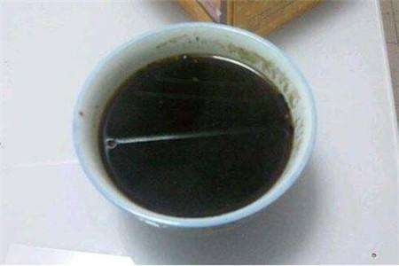
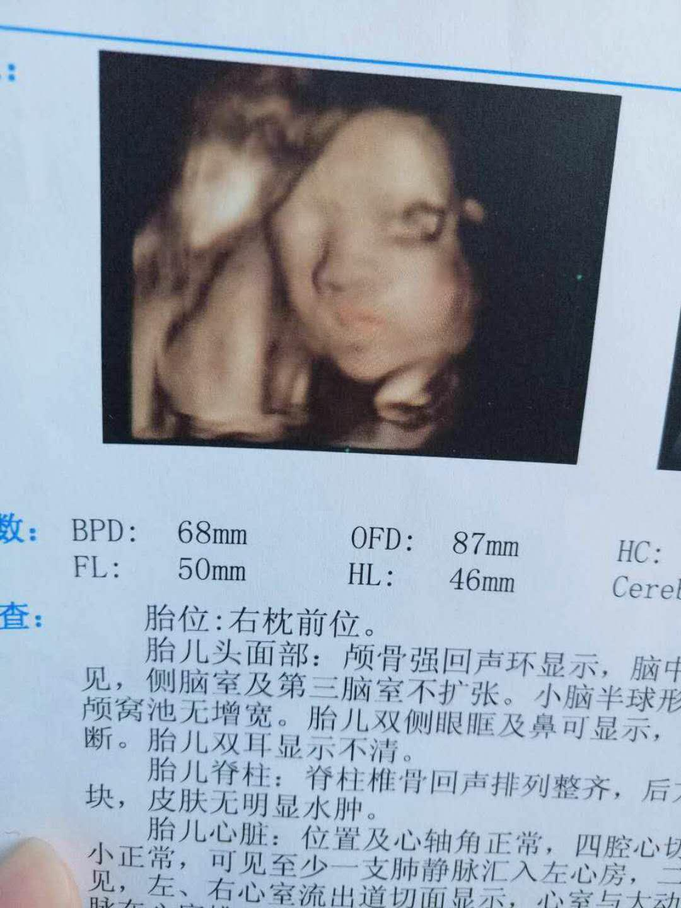
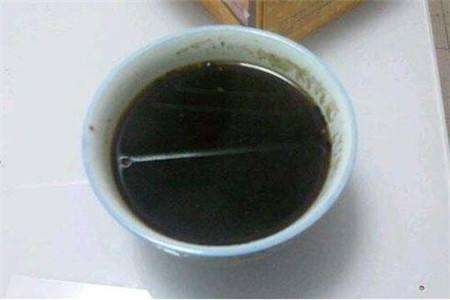

【精品贴】厉害了，闺蜜的建议让备孕3年的我成功怀孕！《献给备孕的朋友，真实分享》
13年正月初八，我和老公结束了4年的恋爱长跑，幸福降临了，我们终于克服一切结婚了。婚后，我们感情一直很好，因为经历过共同奋斗的历程，我们倍加珍惜对方，每年都拿出时间一起出去旅游，一方面为了增加感情的温度，更重要的是希望能散散心，就是在这种情况下，孩子迟迟不来，我们开始为了要孩子，踏上了漫长的治疗之路......

前面的一年内我都是顺其自然，虽然只有一些月经不调但是也没太在意，只是做了一些基础检查，老公一切正常，我只是内分泌稍微有点失调，雌激素有点点偏低，但是也接近正常范围，听说泡脚，运动啊能助孕，就尝试跟着做了起来，半年又过去了，就下起决心做个全身检查。果然，发现我输卵管不通畅，右端腹部轻微积水输卵管堵塞外加宫寒。难怪平时到了排卵期就小腹很痛，划重点，如果排卵期有小腹痛的人就要注意输卵管的问题了，早点知道自己的情况可以避免浪费时间。拖得越久心里会越慌越急。我排卵时期还会有点出血，排出的卵都是带有血的白带样。其实以前我排卵和来月经都不会腹痛的，因为曾经意外怀孕过，和老公结婚条件不成熟，所以选择了 人流，加上那个时候年纪还小，没注意休息受凉了，之后慢慢就开始出现月经不调，排卵期也会有疼痛感，甚至来月经都会腹痛。 妇科主任说，必须要腹腔镜手术或是介入手术，不然肯定不会怀得上。如果手术后不行，就直接试管吧。我当时想死的心都有了，为什么别人生个孩子那么轻而易举，我却要经历这些磨难。于是我网上翻查了很多资料，也看了很多姐妹们的分享，说不到万不得已千万不要手术，手术造成的伤害，是不可逆转的。很多输卵管有问题、宫寒的姐妹通过灌肠，吃中药，热敷肚脐，可还是怀不上，我也不想轻易试管。
 有一次饭局，最好的闺蜜告诉我怀孕了，虽然替她开心，但是心里有很不是滋味，感觉天都要塌了，唯一的战友也抛弃我拥抱成功去了，她也是备孕多年不孕，输卵管不畅通，早衰、还有宫寒的症状，她说她也是吃中药调理的，其实开始我也有点怀疑她是不是做试管了，但是她说并不是的，输卵管不畅通、早衰做试管也难成功。她说她几个朋友都怀孕了，有一个是输卵管双侧堵塞加宫寒做了三次试管都失败了，最后喝了一个老中医家祖传秘方怀孕了，生了一个儿子后告诉她的，祖传秘方，我真觉得这事太玄乎，毕竟自己没有经历过。闺蜜叫我考虑考虑试一试，这几年我试过也挺多了，所以有点麻木。就应付地说考虑考虑......
一天晚上，老公喝了酒回来晚了，我有点生气说了他，他说朋友生完娃高兴非要叫他去喝酒吃饭，我心里听见生娃这两个扎心的字，我就跟疯了一样，完全丧失理智，脑子里只有一个念头怀孕!我哭着和闺蜜说了这件事，不知道你们会不会觉得不孕很丢人，我心里是觉得有点自卑的，所以我只有那么一个闺蜜知道我的情况，我们都是不孕的一类人，虽然她怀孕了，但是她深知我的心情，安慰好我，叫我试下她喝的药，她刚好剩下一个月的，虽然症状不那么同，但是死马当活马医，试试吧，我已经处于非理智状态阶段，就拿过来喝了，一个月后她的药就剩5天的了，因为说这个药得月经开始才喝，我就又喝了五天，和以前喝的不同的是不难喝，不知道是什么原因。不过也没任何反应。第一个月我也没想过会怀孕，也不抱希望，想着都吃了一个月，就再试试吧，找到联系方式，症状之类的沟通好，开了十天的药给我，还被批评了一顿，说怎么样也不要喝别人剩下的药，毕竟每个人的情况是有差异的。

第二个月，因为工作很忙，和老公匆匆在一个排卵几天后的下午同了房，并且同房后我就马上去洗澡了，因为觉得错过排卵期应该不可能会怀孕了，接下来的日子都没什么时间同房，一个月就那么一次吧。十多天的药很快就喝完了，我想着再喝一个月，这味道还能接受，想着再开药的时候，老公在边上嘀咕，说我是不是怀孕了，怎么这个月的经期晚了这么多还没来，我说你脑子有坑，同房一次而且错过排卵了怎么可能怀孕，我想着也不至于那么快，才同房十天不到，月经推迟了十天后，就想着用试纸测一下，凌晨五点起来尿尿，一测，下面那个红杠若隐若现，激动的我心里在颤抖，盯着验孕纸两分钟看着它变深，但是可能因为刚怀上所以不是特别深。接着去药房买了两个不同的验孕棒，我的上帝，真的怀了，不怕告诉你们，我激动的一晚上没睡，一直在和老公说孩子的事。。。 这是宝宝怀孕第一次测到的验孕纸和验孕棒，知道后就不停的玩尿，生怕一切都是梦，我真的好开心好幸福。
这是宝宝怀孕第一次测到的验孕纸和验孕棒，知道后就不停的玩尿，生怕一切都是梦，我真的好开心好幸福。
 这是我怀孕第八个月时候照片。
这是我怀孕第八个月时候照片。
前面的一年内我都是顺其自然，虽然只有一些月经不调但是也没太在意，只是做了一些基础检查，老公一切正常，我只是内分泌稍微有点失调，雌激素有点点偏低，但是也接近正常范围，听说泡脚，运动啊能助孕，就尝试跟着做了起来，半年又过去了，就下起决心做个全身检查。果然，发现我输卵管不通畅，右端腹部轻微积水输卵管堵塞外加宫寒。难怪平时到了排卵期就小腹很痛，划重点，如果排卵期有小腹痛的人就要注意输卵管的问题了，早点知道自己的情况可以避免浪费时间。拖得越久心里会越慌越急。我排卵时期还会有点出血，排出的卵都是带有血的白带样。其实以前我排卵和来月经都不会腹痛的，因为曾经意外怀孕过，和老公结婚条件不成熟，所以选择了 人流，加上那个时候年纪还小，没注意休息受凉了，之后慢慢就开始出现月经不调，排卵期也会有疼痛感，甚至来月经都会腹痛。 妇科主任说，必须要腹腔镜手术或是介入手术，不然肯定不会怀得上。如果手术后不行，就直接试管吧。我当时想死的心都有了，为什么别人生个孩子那么轻而易举，我却要经历这些磨难。于是我网上翻查了很多资料，也看了很多姐妹们的分享，说不到万不得已千万不要手术，手术造成的伤害，是不可逆转的。很多输卵管有问题、宫寒的姐妹通过灌肠，吃中药，热敷肚脐，可还是怀不上，我也不想轻易试管。
 有一次饭局，最好的闺蜜告诉我怀孕了，虽然替她开心，但是心里有很不是滋味，感觉天都要塌了，唯一的战友也抛弃我拥抱成功去了，她也是备孕多年不孕，输卵管不畅通，早衰、还有宫寒的症状，她说她也是吃中药调理的，其实开始我也有点怀疑她是不是做试管了，但是她说并不是的，输卵管不畅通、早衰做试管也难成功。她说她几个朋友都怀孕了，有一个是输卵管双侧堵塞加宫寒做了三次试管都失败了，最后喝了一个老中医家祖传秘方怀孕了，生了一个儿子后告诉她的，祖传秘方，我真觉得这事太玄乎，毕竟自己没有经历过。闺蜜叫我考虑考虑试一试，这几年我试过也挺多了，所以有点麻木。就应付地说考虑考虑......
一天晚上，老公喝了酒回来晚了，我有点生气说了他，他说朋友生完娃高兴非要叫他去喝酒吃饭，我心里听见生娃这两个扎心的字，我就跟疯了一样，完全丧失理智，脑子里只有一个念头怀孕!我哭着和闺蜜说了这件事，不知道你们会不会觉得不孕很丢人，我心里是觉得有点自卑的，所以我只有那么一个闺蜜知道我的情况，我们都是不孕的一类人，虽然她怀孕了，但是她深知我的心情，安慰好我，叫我试下她喝的药，她刚好剩下一个月的，虽然症状不那么同，但是死马当活马医，试试吧，我已经处于非理智状态阶段，就拿过来喝了，一个月后她的药就剩5天的了，因为说这个药得月经开始才喝，我就又喝了五天，和以前喝的不同的是不难喝，不知道是什么原因。不过也没任何反应。第一个月我也没想过会怀孕，也不抱希望，想着都吃了一个月，就再试试吧，找到联系方式，症状之类的沟通好，开了十天的药给我，还被批评了一顿，说怎么样也不要喝别人剩下的药，毕竟每个人的情况是有差异的。
第二个月，因为工作很忙，和老公匆匆在一个排卵几天后的下午同了房，并且同房后我就马上去洗澡了，因为觉得错过排卵期应该不可能会怀孕了，接下来的日子都没什么时间同房，一个月就那么一次吧。十多天的药很快就喝完了，我想着再喝一个月，这味道还能接受，想着再开药的时候，老公在边上嘀咕，说我是不是怀孕了，怎么这个月的经期晚了这么多还没来，我说你脑子有坑，同房一次而且错过排卵了怎么可能怀孕，我想着也不至于那么快，才同房十天不到，月经推迟了十天后，就想着用试纸测一下，凌晨五点起来尿尿，一测，下面那个红杠若隐若现，激动的我心里在颤抖，盯着验孕纸两分钟看着它变深，但是可能因为刚怀上所以不是特别深。接着去药房买了两个不同的验孕棒，我的上帝，真的怀了，不怕告诉你们，我激动的一晚上没睡，一直在和老公说孩子的事。。。
这是宝宝怀孕第一次测到的验孕纸和验孕棒，知道后就不停的玩尿，生怕一切都是梦，我真的好开心好幸福。
这是我怀孕第八个月时候照片。
11-21
15664


.jpg)